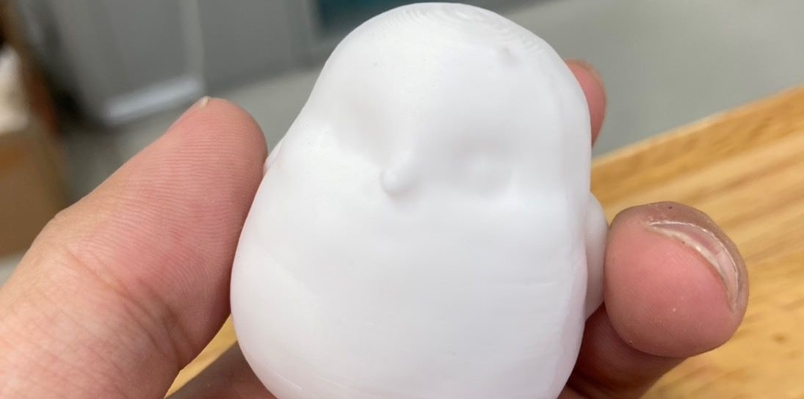

最近話題になりはじめたテキストプロンプトや画像から3Dモデルを生成することができるAI。自動生成をしてくれるので高度な モデリング技術に依存しない反面、データの著作権がどこにあるのかという問題や画面に表示される細かい造形などには限度 があるという問題も存在している。
以下を利用して作成していく。データの作成には60クレジット、ダウンロードには5クレジットかかる。このデータは小さすぎ るのでCuraで大きくする。これはTRIPO AIに画像を読み込ませて出てきた候補の一つ。プロンプトの場合、精密に書くことが コツであることがわかった。面倒だからがぞうでやった。
サンプルデータのダウンロード高さを5cmほどにして3Dプリントしたものがこちら。大体40*40*50で2時間程度。
もし画像やプロンプトでうまくいかない場合はchatGPTのGPT、TripoAIを使うとよい。GPTの導入方法は「GPTを探す」から 検索ボックスに”Tripo3d”と入力し、出てきたGPTを選択してチャットを開始するを押せばできる。